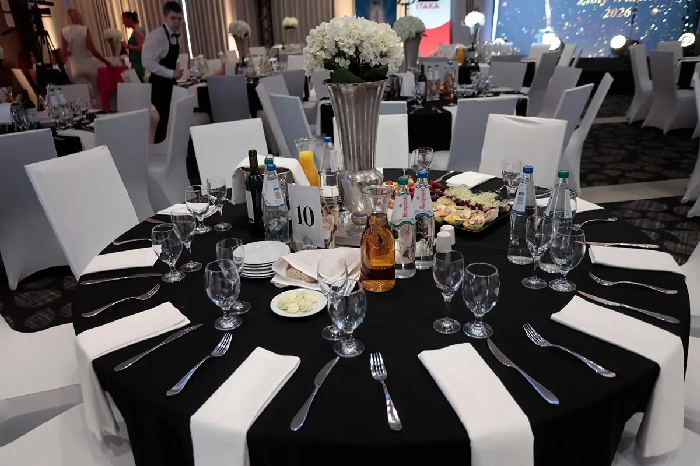
Strona główna/Aktualności
Aktualności
Relacje z wizyt jurorskich, informacje o kolejnych edycjach, Galach i partnerach konkursu.
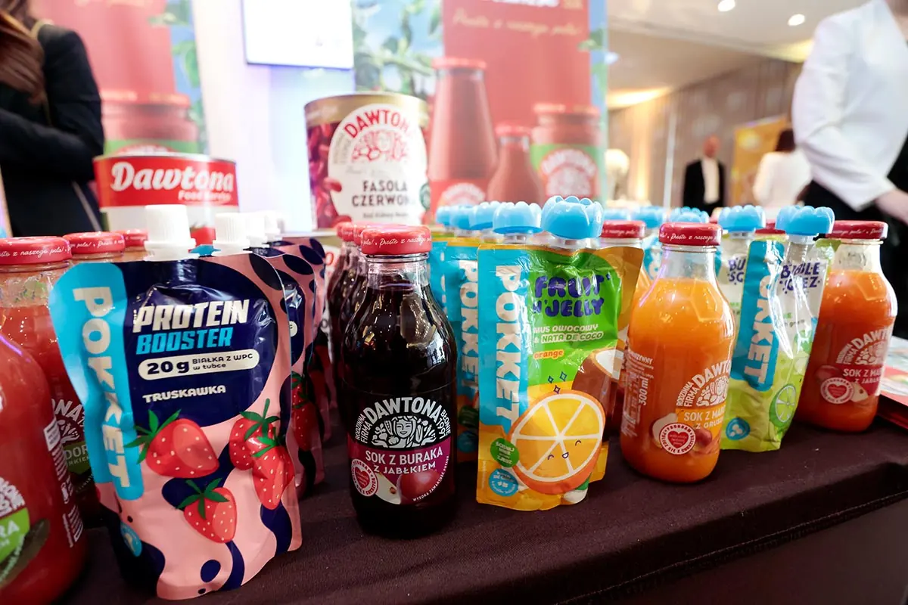
XV Jubileuszowa Gala Złotego Widelca23.04.2026 r., w Airport Hotel Okęcie, odbyła się XV Jubileuszowa Gala o godło promocyjne polskiej gastronomii Złoty Widelec Organizatorem konkursu…
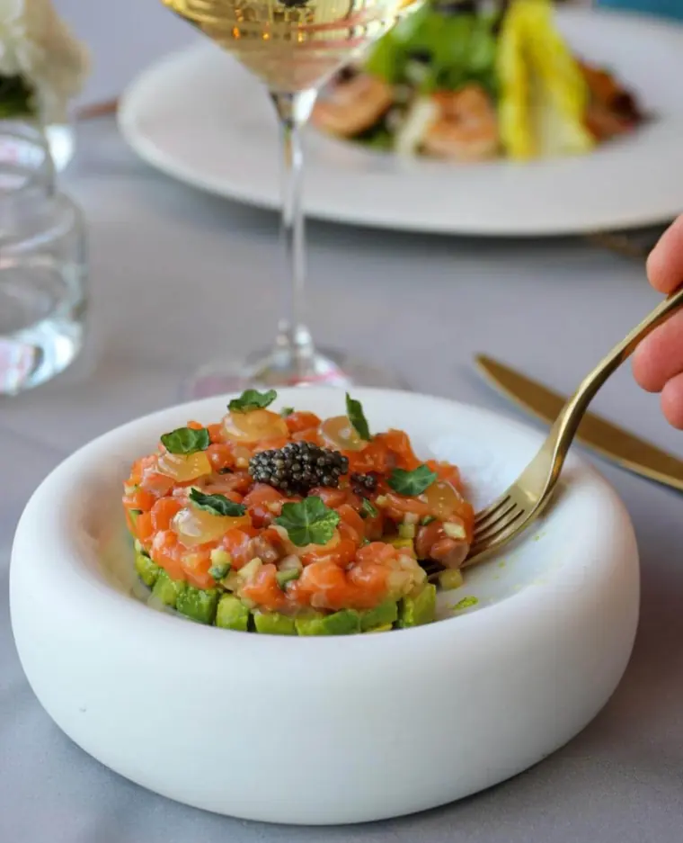
Wizyta jurorska w restauracji Flor No2Tym razem ekspert kulinarny Złotego Widelca, podążył śladami Żółtego Przewodnika Gault & Millau. Paweł Koper trafił do Floor No2 – miejsca, które już…
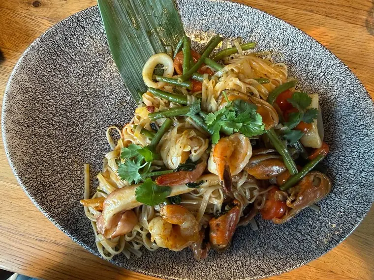
Wizyta jurorska w restauracji King Fu Fusion w BydgoszczyDo Restauracja King Fu Fusion w Bydgoszczy (ul. Jatki 2) działającej w ramach podmiotu AM FOOD GROUP, udał się z wizytą jurorską ekspert kulinarny…
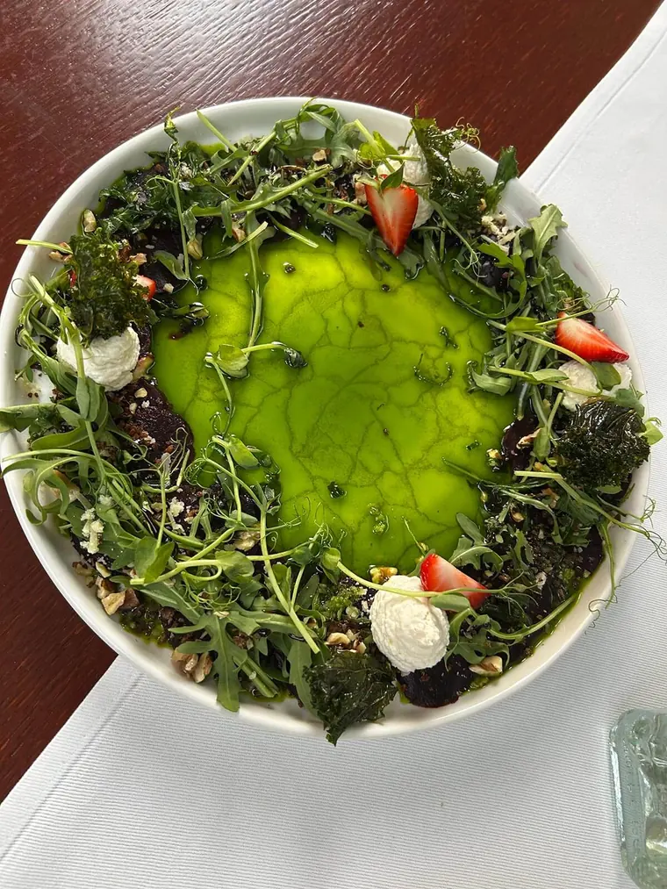
Wizyta jurorska w restauracji BibliotekaZ wizytą jurorską do restaurcji Biblioteka mieszczącej się w hotelu St. Bruno w Giżycku udał się juror konkursu Złotego Widelca Anna Archacka Kolejna…
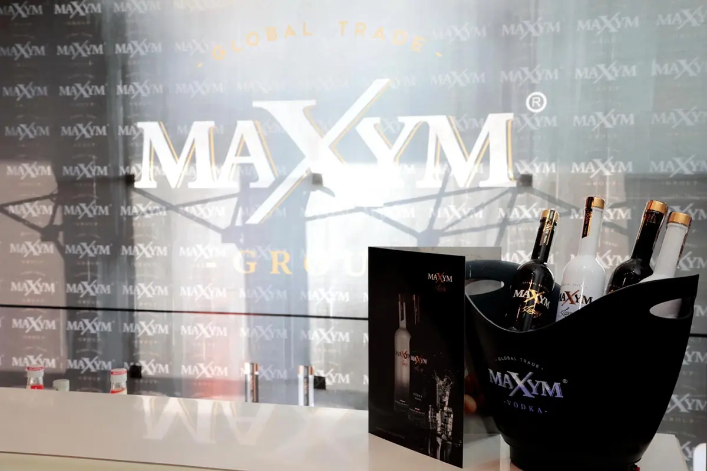
Start XV edycji akcji Polska od Kuchni i V edycji Chef's Choice9 lutego 2026 roku wystartowała XV edycja akcji rekomendującej gastronomię Polska od Kuchni, w której restauracje walczą o nagrodę Złotego Widelca.…
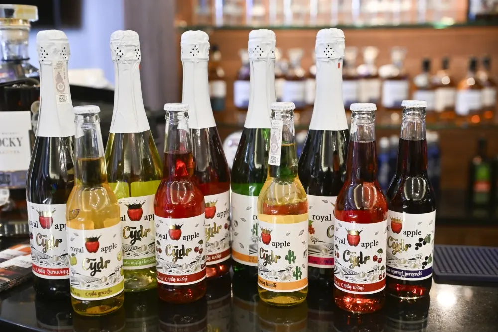
Wielka Gala XIII edycji konkursu Polska od KuchniW dniu 27.04.2024 odbyła się Wielka Gala XIII edycji Konkursu Polska od kuchni podczas której zostały wręczone najlepszym restauracjom w Polsce…
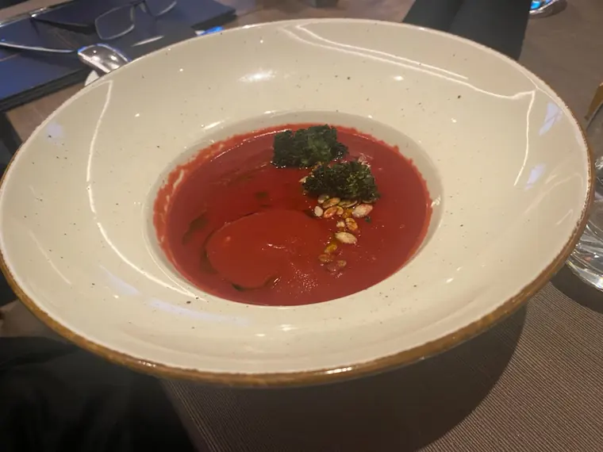
My Place Bar & Restaurant w Gdyni odwiedził Waldemar PiórekW kuchni My Place Bar & Restaurant w hotelu My Story Gdynia Hotel panuje pewna filozofia przygotowania posiłków Filozofia przygotowywanych posiłków…
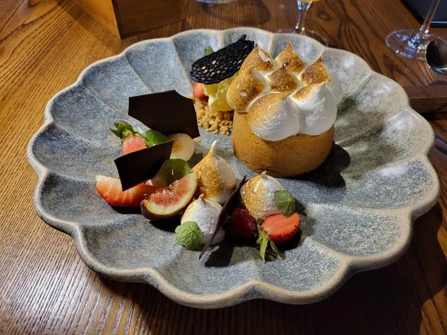
Wizyta jurorska w restauracji Hotelu Złoty Groń Resort & SpaW niezwykle malowniczym Beskidzie Śląskim na samym szczycie Złotego Gronia na wysokości 710 m n.p.m. pośród beskidzkich łąk powstał hotel „Złoty Groń…
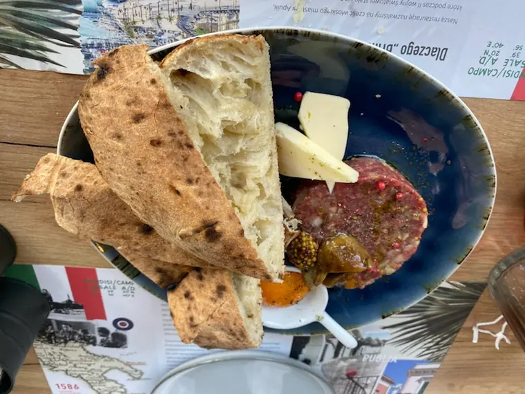
Wizyta jurorska w restauracji Brindisi w WarszawieRestauracja została nazwana na cześć włoskiego miasta w Apulii, która podczas II wojny światowej stała się tymczasowym domem dla polskich lotników.…
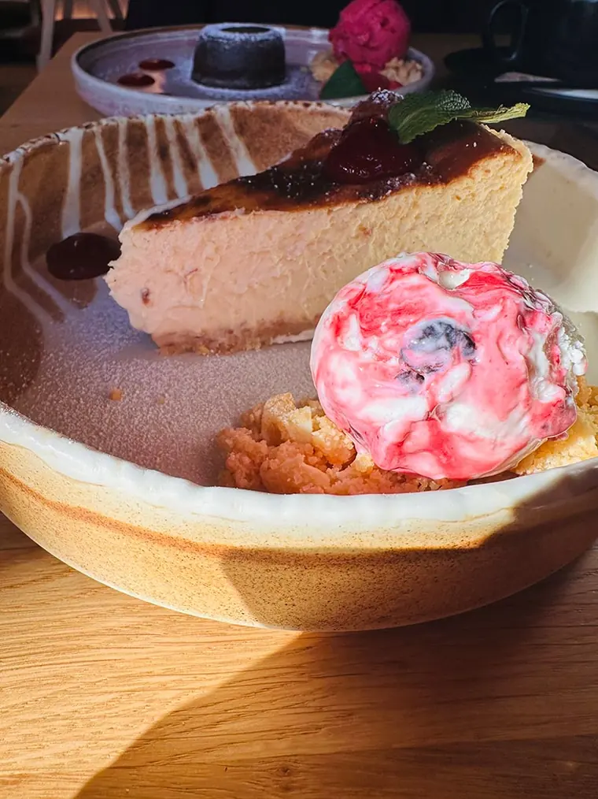
Jurorzy ruszyli do pracy: restauracja Rezo w Suchej BeskidzkiejO to pierwsze recenzje z restauracji, które walczą o nagrodę Złotych Widelców Restaurację REZO Restro & Bar w Suchej Beskidzkiej mieszczącą się…
 Ruszyła XIII edycja akcji Polska od Kuchni
Ruszyła XIII edycja akcji Polska od Kuchni27 lutego 2024 roku ruszyła kolejna edycja akcji „Polska od Kuchni” organizowanej przez Fundację WIP WARTO IM POMÓC. Po raz XIII będziemy nagradzać…
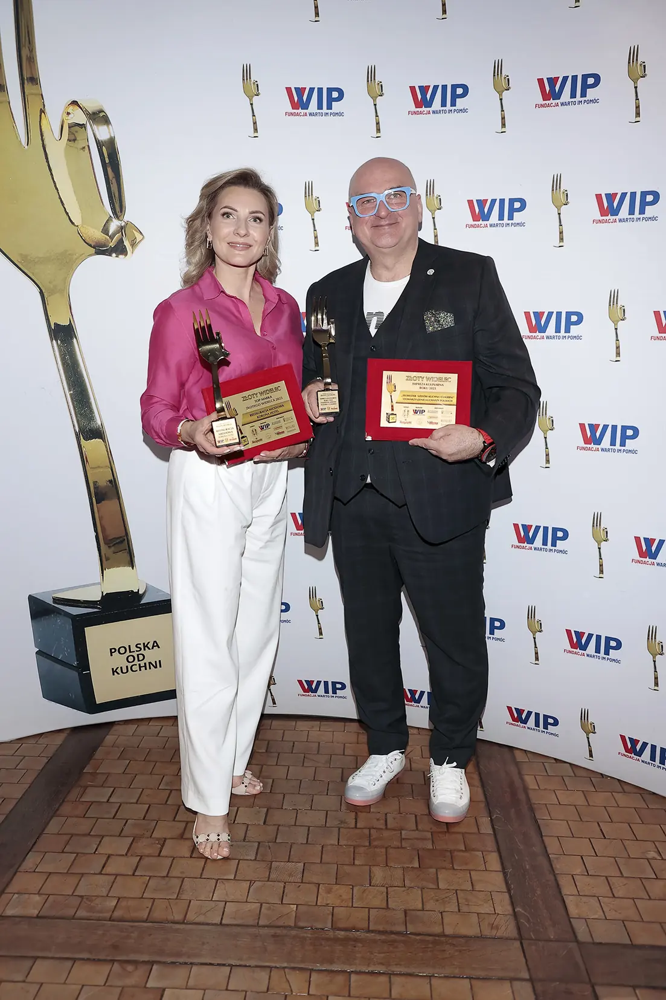
Wielka Gala XII edycji konkursu Polska od KuchniWręczono również po raz drugi godła promocyjne CHEFS CHOICE. Nagroda jest przyznawana przez Stowarzyszenie Kucharzy Polskich i Fundację WIP firmom z…
- Remigiusz Rączka ekspertem marki Złotego Widelca
Urodził się i wychował w tradycyjnej śląskiej rodzinie z tradycjami górniczymi. Od dzieciństwa uczestniczył i pomagał w tradycyjnych czynnościach…
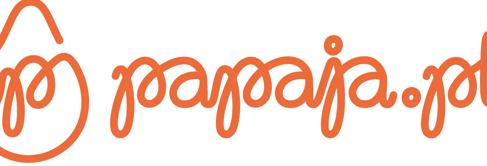
Portal gastronomiczny papaja.pl partnerem medialnym Złotych WidelcówPapaja.pl to największy i najstarszy portal gastronomiczny w Polsce. Od ponad 20 lat jego serwis jest źródłem wiedzy dla szefów kuchni, restauratorów…
 Polska od Kuchni startuje z XII edycją konkursu
Polska od Kuchni startuje z XII edycją konkursuFundacja WIP Warto im Pomóc już po raz dwunasty organizuje akcję rekomendującą gastronomię „Polska od Kuchni”. Akcja przebiega pod hasłem „Wrócę…
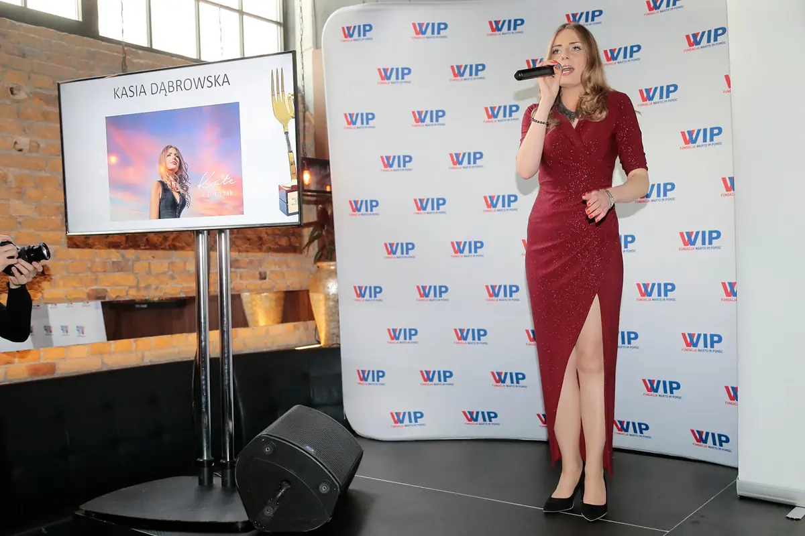
XI edycja konkursu Polska od Kuchni rozstrzygniętaPo raz XI Fundacja WIP Warto Im Pomóc w ramach konkursu „Polska od Kuchni” nagrodziła Złotym Widelcem najlepsze restauracje w całej Polsce. Wręczono…
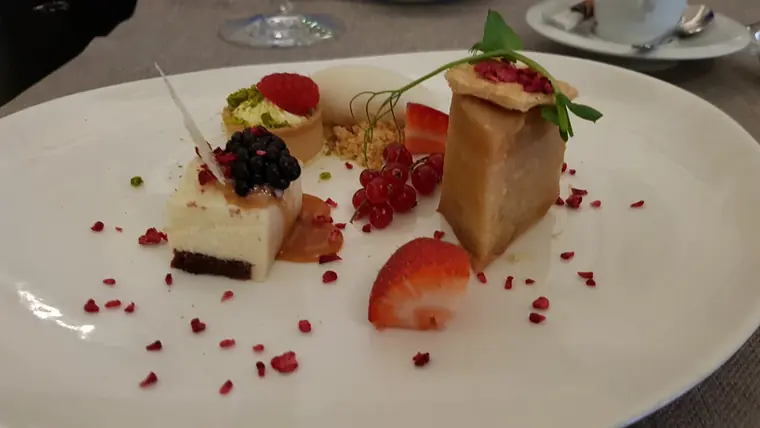
Wizyta jurorska w restauracji N31 w WarszawieTo będzie najkrótsza za moich opinii, ponieważ trudno opisać coś, co jest doskonałe, ponieważ zgodnie z słowami G.W. Leibnitza „...Doskonałe jest…
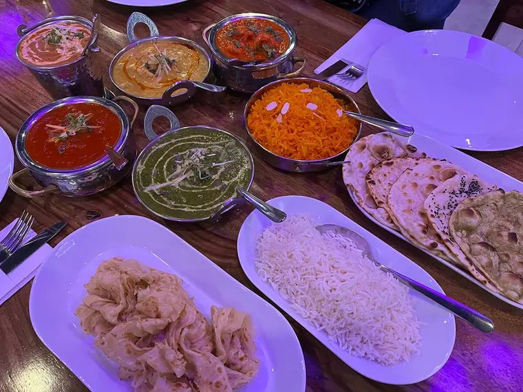
Wizyta jurorska w restauracji Curry King w PiasecznieCurry King...bajkowy świat dla miłośników i nowicjuszy w świecie indyjskiej kuchni... Wszystko przygotowane świeżutko na miejscu, więc nie liczcie na…
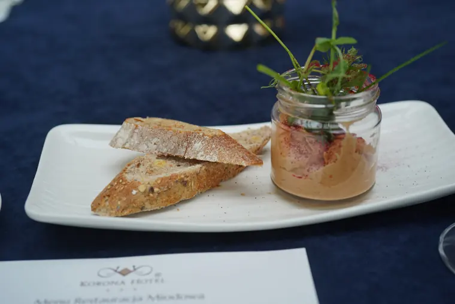
Wizyta jurorska w restauracji Miodowej w Hotelu KoronaHotel jest usytuowany pośród pięknych lasów co zrobiło na mnie miłe wrażenie już od pierwszej chwili. Wnętrze restauracji przestronne, elegancko…
- Wizyta jurorska w restauracji Warszawskie Bistro
To restauracja w której można wróć do smaków przedwojennej Warszawy w nowoczesnym wydaniu. W samym centrum otworzyło się miejsce, które urzeka…
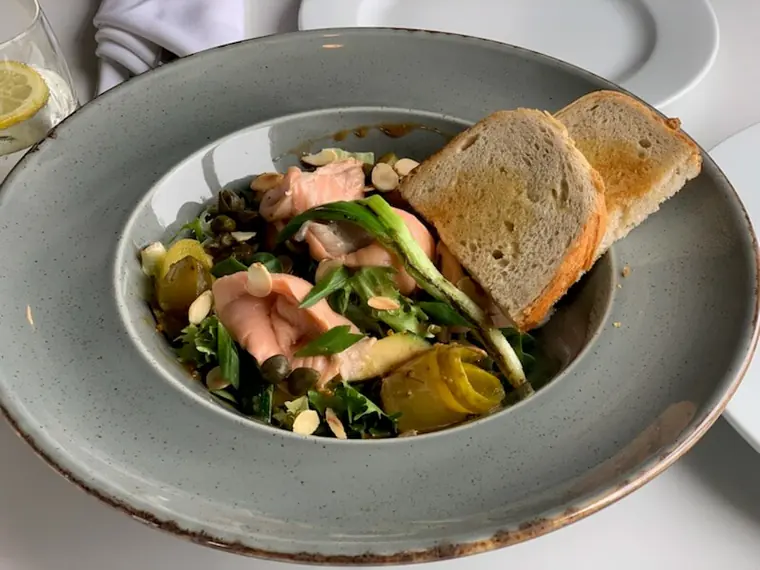
Wizyta jurorska w restauracji Hotelu SulbinRestauracja przywitała mnie pomimo sporego ruchu w sposób naturalny. Szef kuchni moim zdaniem jest wirtuozem swojego fachu. Zaserwował: przystawki.…
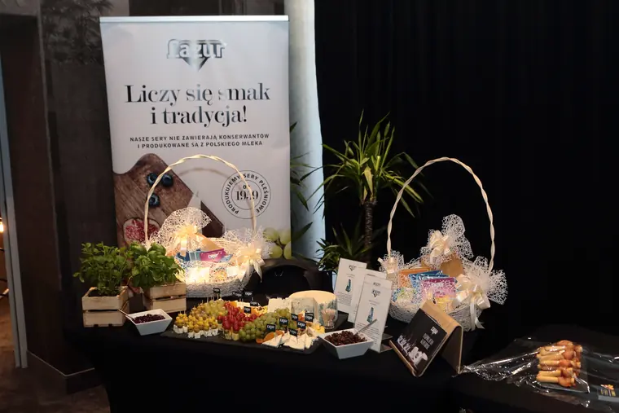
Wizyta jurorska w restauracji Sardynka UsteckaCiekawą przystanią kulinarną na mapie Polski jest Restauracja „Sardynka Ustecka” położna w historycznej kaszubskiej osadzie rybackiej. To malownicze…
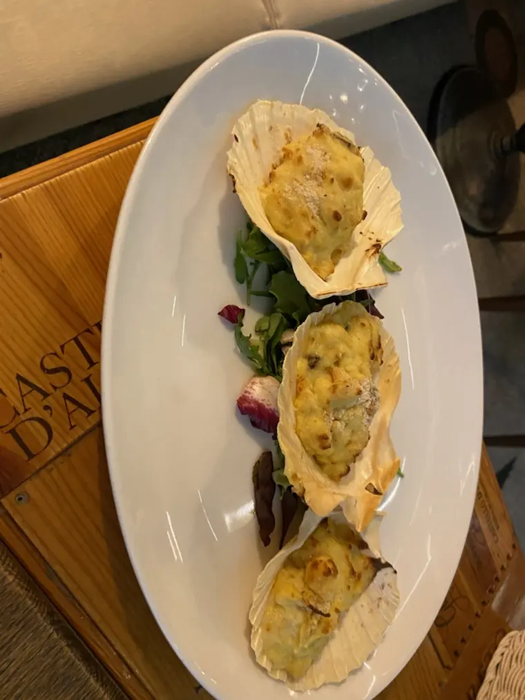
Wizyta jurorska w restauracji San Lorenzo w WarszawieSan Lorenzo to "włoski" adres kulinarny, obecny od ponad dwudziestu lat na rynku warszawskich restauracji. Bywałem tam często, ale przyznaję, że…
- Wizyta jurorska w restauracji Roxx w Warszawie
Gdy w menu zobaczyłem Stek Chateaubriand wiedziałem, że muszę go spróbować. Jest on niezwykłą rzadkością w menu restauracji w całej Polsce. Stek…
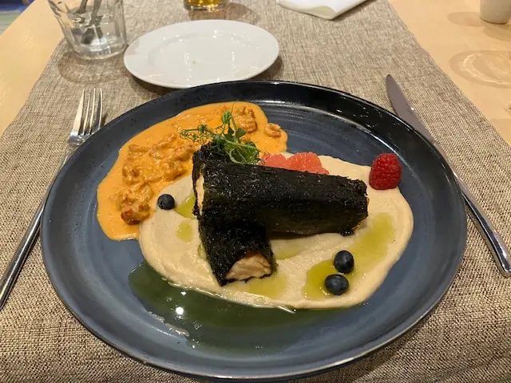
Wizyta jurorska w restauracji PonidzieW malowniczo położonym uzdrowisku o niezwykłych właściwościach wód termalnych – Busku Zdrój – znajduje się awangardowy hotel o wdzięcznej nazwie…
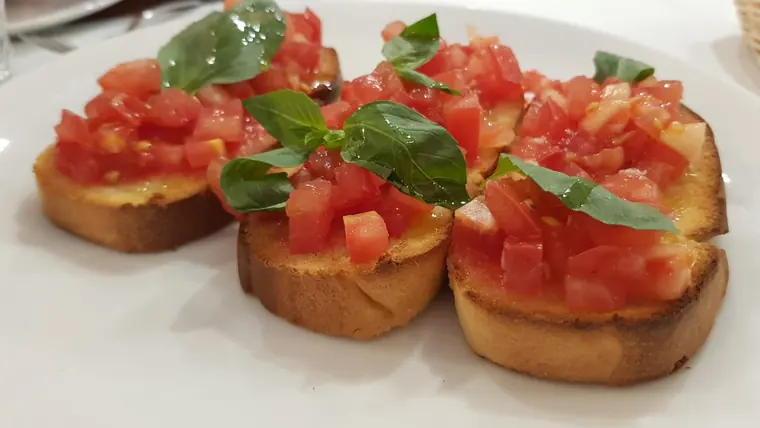
Wizyta jurorska w restauracji Osteria Le BottiCiekawym miejscem na trasie kulinarnych smaków okazała się włoska restauracja o nazwie „Osteria Le Botti” w Tychach. Jest ona miejscem kameralnych…
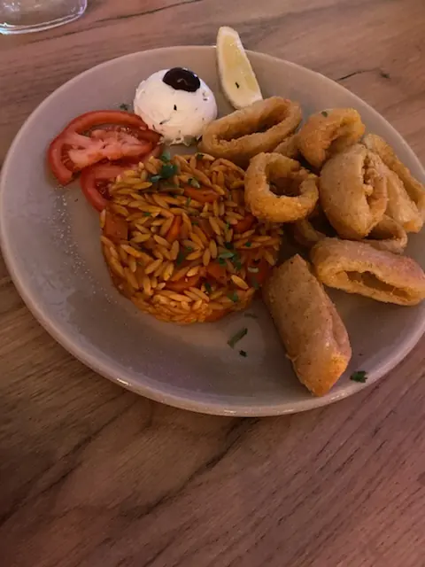
Wizyta jurorska w restauracji Meze w WarszawieGreek Restaurant & Bar MEZE by Teo Vafidis & Sons to autorski koncept popularnego greckiego kucharza, który tworzy wspólnie z synami. Meze to…
- Tłocznia Wiatrowy Sad partnerem Gali Złotych Widelców
Wiatrowy Sad to firma rodzinna zajmująca się produkowaniem soków z owoców z własnego gospodarstwa sadowniczego, położonego w pobliżu Parku…
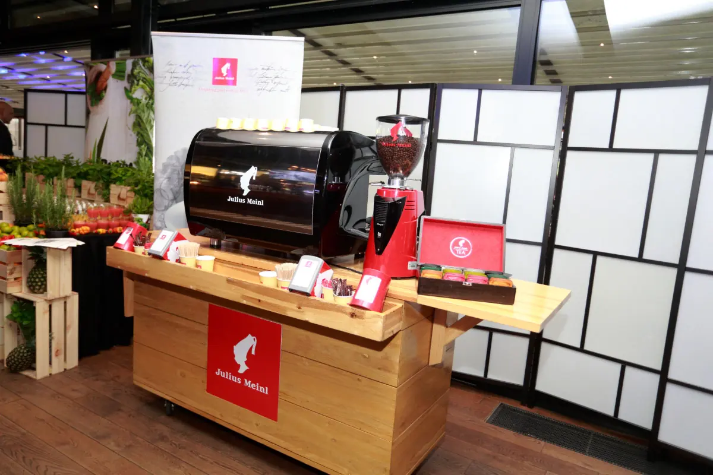
Od 1 marca 2022 rusza kolejna edycja akcji Polska od Kuchni1 marca 2022 roku rusza kolejna edycja akcji „Polska od Kuchni” organizowanej przez Fundację WIP WARTO IM POMÓC. Po raz XI będziemy nagradzać Złotym…
 Laureaci X jubileuszowej edycji konkursu Polska od Kuchni
Laureaci X jubileuszowej edycji konkursu Polska od Kuchni2 września br. w warszawskiej Scenie Relax odbyła się X jubileuszowa Gala wręczenia nagród „Złoty Widelec” będąca zwieńczeniem ogólnopolskiej akcji…
Archiwum wpisów
Starsze wpisy z lat 2014-2026 (220). Zostaną przeniesione jako pełne wpisy w panelu strony.
- Rozmowa z panią Justyną Ossowską, szefową restauracji RyBaśka, kolekcjonerką statuetek „Złotego Widelca"
- Od małego projektu do cenionego konkursu | Złoty Widelec
- Najserdeczniejsze życzenia noworoczne
- Wesołych Świąt!
- Wielkanoc 2025
- Zdrowych pogodnych Świąt Bożego Narodzenia
- Wszystkiego najlepszego w 2024
- Życzenia świąteczne
- Szczęśliwego Nowego Roku
- Xi edycja konkursu Polska Od Kuchni
- Okręgowa Spółdzielnia Mleczarska w Piątnicy nowym PARTNEREM
- Marka herbaty DILLMAH i marka kawy SAQUELLA wsparły Galę ZŁOTYCH WIDELCÓW
- Restauracja stixx partnerem gali Złotego Widelca
- Dine 2 door nowym partnerem zlotego widelca
- Wspaniałych Świąt pełnych miłości i śmiechu!
- Restaurację 5 PIĘTRO w hotelu Olimp w Wejherowie odwiedził ekspert kulinarny WIP, Beata Komorek
- Zajazd Plan w Wojborzu położony przy trasie S8 w kierunku na Warszawę odwiedził ekspert kulinarny WIP, członek założyciel Klubu Szefów Kuchni, Ambasador marki Złotego Widelca, Wiesław Bober
- Do restauracji ROXX mieszczącej się w Warszawie zawitała z wizytą jurorską udała się Jolanta Borowiec, Ambasadorka Marki Złotego Widelca, dyrektor stacji POLSAT CAFE, ekspert kulinarny WIP
- Beata Komorek, ekspert kulinarny WIP odwiedziła z wizytą jurorską letnią restaurację MARINA BANGLOB CATERING położoną przy Marina Yach Park w Gdyni
- Restaurację WILLA FILIKS w Kazimierzu Dolnym odwiedziła Barbara Adamczewska, ekspert kulinarny WIP, autorka prawie 50 książek, pasjonatka historii kulinariów, wybitna dziennikarka
- Relacja z wizyty w WOŁAWINA we Wrocławiu
- Wędliny z dębliny nowym partnerem konkursu Polska Od Kuchni i gali Złotego Widelca
- Relacja z wizyty w Hotelu Sulbin
- Relacja z wizyty w Krucza Coctail Bar w Warszawie
- Relacja z wizyty w restauracji Boreczna
- Relacja z wizyty w restauracji MUSI SUSHI w Lublinie
- Relacja z wizyty w restauracji w hotelu Złoty Groń
- Relacja z wizyty w restauracji Dwór Kaliszki
- Relacja z wizyty w restauracji Sowa
- Relacja z wizyty w restauracji Beskidzka 40
- Relacja z wizyty w restauracji Małe Morze
- Relacja z wizyty w restauracji Pod Papugami
- Relacja z wizyty w restauracji Zachodniej
- Relacja z wizyty w restauracji Borodino
- Browar Palatum nowym Partnerem konkursu Polska od Kuchni
- SCENA RELAX nowym partnerem konkursu Polska od Kuchni
- Trwa X jubileuszowy konkurs Polska od Kuchni którego partnerem merytorycznym jest Stowarzyszenie Szefów Kuchni Euro Toques Polska
- Gastronomia otwiera swoje restauracje. rusza x jubileuszowa edycja konkursu Polska Od Kuchni o nagrodę Złotego Widelca
- Radosnych Świąt Wielkanocnych
- Życzenia świąteczne
- Gala IX edycji ogólnopolskiej akcji promującej gastronomię „Polska od Kuchni
- IX edycja konkursu POLSKA OD KUCHNI rozstrzygnięta
- Rozstrzygnięcie konkursu SMAKI TWOJEGO REGIONU
- Relacja z wizyty w restauracji BONAPPETIT
- Relacja z wizyty restauracji Bursztynowa w Warszawie
- Relacja z wizyty restauracji GRINGO w Warszawie
- Relacja z wizyty pizzerii IL PADRINO RISTORANTE
- Relacja z wizyty restauracji POLSKIEJ
- Relacja z wizyty restauracji w Hotelu TAJTY w Wilkasach
- Relacja z wizyty w restauracji Kuchnia by Marcin Szukaj w Bydgoszczy
- Relacja z wizyty w restauracji CZEKOLADA Cafe
- Relacja z wizyty w restauracji TRZY GĘSI w Krakowie
- Relacja z wizyty w restauracji mieszczącej się w Dwór Kaliszki
- Relacja z wizyty w restauracji Willa Filiks Nałęczów
- Relacja z wizyty w restauracji STIXX Bar & Grill
- Relacja z wizyty w restauracji Talaria Resort&SPA
- Relacja z wizyty w restauracji w w hotelu AGIT w Lublinie
- Relacja z wizyty w restauracji Świętoszek
- Relacja z wizyty w restauracji w Hotel Alpin w Szczyrku
- Relacja z wizyty w ThaiStreet Wilanów by Magdalena Woźniak
- Relacja z wizyty w restauracji Sulbin
- Wznawiamy konkurs,,Polska Od Kuchni
- Zdrowych Świąt Wielkanocnych
- Zmiana warunków konkursu w związku ze stanem zagrożenia epidemicznego
- Relacja z wizyty w restauracji borodino w nowym dworze mazowieckim
- Relacja z wizyty w restauracji alpin w szczyrku
- Jurorzy w akcji
- Dwa złote medale na Mistrzostwach Olimpijskich IKA Olympiade der Koche Stuttgard
- Euro Togues Polska Europejskie Stowarzyszenie Kucharzy PARTNEREM merytorycznym IX edycji Konkursu,,Polska od Kuchni
- Gala ZŁOTEGO WIDELCA wywiad z Jarosławem Jakimowiczem, aktorem i przedsiębiorcą
- Nagrody „Złoty Widelec” VIII edycji ogólnopolskiej akcji promującej gastronomię „Polska od Kuchni” zostały wręczone – 58 statuetek odebrali tegoroczni laureaci
- VIII edycja WOK 2019 Telewizja ATV
- POK edycja VIII wywiad dla Telewizji FLESZ.NEWS
- Rozstrzygnięcie konkursu dla internautów "Smaki Regionów
- Spółdzielnia Mleczarska SPOMLEK z Radzynia Podlaskiego dołączyła do grona Partnerów Gali ZŁOTEGO WIDELCA. Na Gali goście będą mogli skosztować serów dostępnych pod wspólnym brendem SKARBY SEROWARA
- Wesołych Świąt
- Wzorcownia by Wiesław Bober
- Restauracja Baczewski w Warszawie
- Marszałek Województwa Podlaskiego Artur Kosicki objął Honorowym Patronatem konkurs POLSKA OD KUCHNI
- Wizyta w restauracji magiel w gdańsku
- Wizyta w restauracji curry king w piasecznie
- Do restauracji PAPAVERO w Poznaniu udała się z wizytą jurorską reaktor naczelna magazynu,,Biznes Restauracje & Catering”
- Ilona Zalewska ekspert kulinarny WIP z wizytą jurorską w restauracji Scandale Royal Resto & Vodka House w Krakowie
- Sopot. restautracja bagażownia u zynera
- Kielce.restauracja monte carlo
- Restaurację KYRYNICKA BY SGUŁA mieszczącą się w Rezydencji Gubałówka w Kościelisku odwiedził ekspert kulinarny WIP Aneta Larysa Knap
- Wizyta jurorska w „Zajeździe Hetmańskim” w Kroczycach koło Katowic
- Wizyta jurorska w restauracji Świętoszek w Warszawie
- Restauracja Monte Carlo w Kielcach restauracja o wyjątkowym klimacie i równie wyjątkowej, znakomitej kuchni
- Prezydent m. st. warszawy rafał trzaskwski objął honorowym patronatem konkurs Polska Od Kuchni
- W hotelu TOBACO w Łodzi mieści się restauracja “U Kretschmera”. Przedstawiamy relacje jurorską z wizyty w tej restauracji
- Anna Kosterna-Kaczmarek odwiedziła restaurację j Mokolove w Warszawie
- Nalewki staropolskie karol majewski i wspólnicy po raz kolejny partnerem akcji rekomendującej gastronomię,,Polska Od Kuchni''
- Do organizatorów wpływają kolejne patronaty. aleksandra dulkiewicz prezydent miasta gdańska objęła honorowym patronatem konkurs Polska Od Kuchni
- Jurorzy zaczynają odwiedzać restauracje. Przedstawiamy relacje z wizyty w FOLK GOSPODZIE w Warszawie, Wygląda na to że było smacznie
- Do restauracji La Iberica udał się z wizytą jurorską organizator konkursu POLSKA od Kuchni Waldemar Piórek
- Do grona jurorów i ekspertów Marki ZŁOTEGO WIDELCA dołączył JAROSŁAW WALCZYK, współzałożyciel, fundator i Prezes Federacji Klubów Szefów Kuchni
- Wywiad w radiu Horeca z organizatorem konkursu Polska Od Kuchni prezesem fundacji WIP - Waldemarem Piórekiem
- Organizatorzy konkursu otrzymują kolejne Patronaty Honorowe
- Napływają kolejne Patronaty Honorowe nad konkursem „POLSKA OD KUCHNI”
- Powstałe w 1995 roku przedsiębiorstwo „Jackiewicz J”, przetwórstwo warzyw i owoców - nowym PARTNEREM konkursu,,Polska od kuchni
- Startuje konkurs dla internautów "Smaki Regionów
- Nowe patronaty medialne
- MUSZYNIANKA - nowym Partnerem VIII edycji konkursu POLSKA OD KUCHNI
- 15 lutego br. oficjalne ruszyła VIII edycja akcji rekomendującej gastronomię POLSKA OD KUCHNI
- Laureaci i podsumowanie tegorocznej edycji na GdzieZjesc.info
- Wywiaz z organizatorem konkursu o Złoty Widelec
- 27.04.2018r. w Restauracji DRUKARNIA w Warszawie odbyła się GALA,,Złotego WIDELCA" - edycja VII
- CUKIERNIĘ I KAWIARNIE DOUX z wizytą jurorską odwiedziła ekspert WIP, Ewa Drzewiecka - wicemistrzyni Europy w cukiernictwie 2018r. Czy będzie sroga ocena.... po foto relacji wygląda, że chyba nie
- Sławomir Kamiński ekspert WIP odwiedził w Gdyni restaurację PIETERWAS KREW I WODA. Przedstawiamy foto relację
- Do Łodzi z wizytą jurorską wybrała się pani Anna Wysocka, ekspert kulinarny WIP. W QUALE RESTAURANT miała przyjemność skosztowania tych smakołyków
- BRITISH BULLDOG PUB odwiedził kolejny juror WIP Arkadiusz Martyniuk
- Restaurację SAN THAI odwiedził ekspert kulinarny WIP od kuchni tajskiej i japońskiej Karol Pietrasiak
- Restaurację FLORIAN Ogień czy Woda odwiedziła Anna Dębska
- Restaurację LIF mieszczącą się na Mokotowie odwiedziła Magda Teresiak
- Restaurację casa ristoranti odwiedziła anna kosterna-kaczmarek właścicielka portalu czosnek w pomidorach, chyba było pysznie
- Foto relacja z wizyty jurorskiej eksperta WIP pani Agnieszki Świst-Kamińskiej, która odwiedziła restauracje,, POD PAPUGAMI
- Nowy partner gali Złotego Widelca
- Konkurs o Złoty Widelec otrzymał patronat honorowy prezydent m. st. warszawy
- Wywiad z Panem Waldemarem Piórkiem Prezesem fundacji WIP oraz pomysłodawcą i organizatorem akcji Warszawa od Kuchni / Polska od kuchni z którego dowiecie się szczegółowych informacji o zasadach i przebiegu konkursu
- Patronat Marszałka Województwa Mazowieckiego
- Do Konkursu o,,Złoty Widelec" dołączyli nowi Partnerzy
- Jeszcze do 15.03 restauracje mogą same zgłosić się do udziału w konkursie,,Warszawa od Kuchni’’
- GdzieZjesc.info® - Przewodnik po restauracjach i lokalach gastronomicznych w Polsce
- „Warszawa od Kuchni” akcja promująca warszawską gastronomię startuje z VII edycją 1 marca 2018 r
- Restauracja George Sand jest laureatem Złotego Widelca 2015 - nagrody przyznanej przez jury IV edycji akcji rekomendującej warszawską gastronomię „Warszawa od kuchni”
- Złotego nam brakowało
- Z wizytą w restauracji THE ALCHEMIST GASTROPUB
- Odwiedziny w Prodiżu Warszawskim
- Odwiedziny w Restauracji Elixir w Domu Wódki
- Konkurs o ZŁOTE WIDELCE rozstrzygnięty
- W dniu 16.04 Kapituła wyłoniła laureata Nagrody Głównej konkursu,,Smak Warszawy"
- Zdrowych i radosnych świąt Wielkanocnych
- Marka AVIKO nowym Partnerem Gali Warszawa od kuchni
- Hello Coffee nowym Partnerem Gali Złotych Widelców
- Wielkimi krokami zbliżamy się do Gali ZŁOTEGO WIDELCA
- SADVIT nowym Partnerem Konkursu "Warszawa od kuchni”
- Do patronów medialnych "Warszawy Od Kuchni" dołączył GdzieZjesc.info® - Przewodnik po restauracjach i lokalach gastronomicznych w Polsce
- Konferencja prasowa VI edycja Warszawa Od Kuchni 2017
- Ruszyła VI edycja konkursu "Warszawa od kuchni
- 10.02.2017 w restauracji N 31 w Warszawie odbyła się konferencja prasowa promująca VI edycję akcji rekomendującej stołeczną gastronomię "WARSZAWA OD KUCHNI
- Prezydent m.st.Warszawy po raz kolejny objęła patronatem honorowym konkurs "Warszawa od Kuchni
- Prymat partnerem wok
- Nowi patroni medialni konkursu
- Nowy Partner konkursu Hurtownia Warzyw i Owoców BUKAT
- Żywiec Zdrój Partnerem,,Warszawy od Kuchni
- Nowy blog kulinarny "Czosnek w pomidorach.Pl" wspiera Warszawę od kuchni
- Do grona Partnerów VI edycji WOK dołączyły Nalewki Staropolskie Karol Majewski oraz marka wódki monopolowej BACZEWSKI
- Portal BLOG STAR patronem medialnym Konkursu
- Kolejni blogerzy dołączają do Akcji
- Portal PAPAJA .PL - kolejnym patronem medialnym wydarzenia
- Marszałek Województwa Mazowieckiego objął patronatem honorowym VI edycję akcji rekomendującej stołeczną gastronomię "Warszawa od kuchni
- Centrum Wina - nowym Partnerem VI edycji "Warszawy od kuchni
- Warszawa od Kuchni" akcja Warszawskiej Izby Przedsiębiorców promująca warszawską gastronomię startuje z VI edycją
- Portal News Gastro patronem medialnym VI edycji WOK
- Gastro Magic Wypożyczalnia Partnerem VI edycji WOK
- Wkrótce rusza vi edycja akcji rekomendującej stołeczną gastronomię,,Warszawa od kuchni" 2017
- Gala V edycji Warszawy od kuchni
- Smaki Warszawy
- Konkurs "Smak Warszawy
- Zdobywczyni Telekamer w roku 2015 i 2016, aktorka filmowa i teatralna, wokalistka Barbara Kurdej - Szatan z wizytą jurorska w Restauracji FLORIAN,,Ogień i Woda
- A takie smaczne rzeczy przygotował dla swoich gości Gringo Bar
- Renata Rogólska z portalu BlogStar i Marlena Skarzyńska z magazynu TeleTydzień jako nasze jurorki odwiedziły Restaurację Trzyczwarte
- Restaurację Tobaya odwiedziły pisarka Katarzyna Miller i reżyserka Suzan Giżyński
- Sushi Plac Unii odwiedzili aktorzy - jurorzy Aleksandra Mikołajczyk i Robert Żołędziewski
- RESTAURACJĘ INDIA KING odwiedził juror Shamail Kham - rodowity mieszkaniec Indii przebywający w Polsce
- A takie potrawy podają w restauracji VILLA - VINCI w Dziekanowie Nowym pod Warszawą
- Restaurację TRATORIA BOCCONE odwiedziła pani Barbara Jończyk, prezes Klubu Integracji Europejskiej
- Restaurację,,Wiesz co Zjesz" odwiedziła z wizytą jurorską znakomita aktorka filmowa i teatralna Sonia Bohosiewicz
- Restaurację THAISTY odwiedziła Klaudia Halejcio
- Restaurację,,Czerwony Wieprz" odwiedziła aktorka serialu Barwy szczęścia . Studiuje również psychologię.
- Wielkimi krokami zbliża się rozstrzygnięcie V edycji konkursu
- ŻYWIEC ZDRÓJ - Partnerem Gali Warszawa od Kuchni
- Olga Borys była z wizytą jurorską w restauracji Folk Gospoda
- Restaurację NAVONA odwiedziła redaktor naczelna portalu BlogStar.pl Edyta Karczewska-Madej oraz Renata Rogólska PR & Management
- PIAZZA RISTORANTE odwiedziła aktorka serialu rodzinka.pl Olga Kalicka
- Z wizytą jurorską do restauracji Bubbles wybrała się gwiazda serialu "Barwy szczęścia" - aktorka Honorata Witańska
- Robert Żołędziewski, aktor jurorem w restauracji LIF
- Aktor Robert Żołędziewski podczas pracy jurorskiej w restauracji LIF
- I co tu zjeść...?
- Kolejna Restauracja chwali się uczestnictwem w konkursie Warszawa od Kuchni
- Jurorzy ruszyli oceniać restauracje. Wyniki poznamy na Gali 21 kwietnia
- Restauracja LIF uczestnikiem akcji Warszawa od Kuchni
- DE GUSTO BEER - nowym partnerem Warszawy od Kuchni
- A tak dają jeść w restauracji Gusto która bierze udział w konkursie.Na zdjęciu bliny z cukinii z łososiem
- V edycja akcja rekomendującej stołeczną gastronomię otrzymała Patronat honorowy od Prezydenta m. st. Warszawy
- Olga Kalicka – polska aktorka filmowa zgodziła się być jurorem w konkursie,,Warszawa od kuchni. Na zdjęciu podczas spotkania z organizatorem Waldemarem Piórkiem w restauracji,,Przy Zamku”. Restauracja była laureatem Złotego widelca w 2008 roku
- Grecy uczynili z jagnięciny danie narodowe, my postrzegamy je jako trudno dostępny rarytas. Nie jest tania, ale to przez skromną liczbie amatorów . Jagnięcina to pod każdym względem mięso z absolutnie z najwyższej półki
- GASTRO MAGIC WYPOŻYCZALNIA po raz kolejny Partnerem akcji rekomendującej stołeczną gastronomię,,Warszawa od kuchni
- W zeszłym roku znana i lubiana aktorka Ewa Gawryluk była jurorem IV edycji akcji rekomendującej warszawską gastronomię Pozytywnie oceniła,,Restaurację Polską" mieszczącą się w AIRPORT Hotel,,Okęcie"
- LYONESS - Partnerem Głównym V edycji akcji rekomendującej stołeczną gastronomię,,Warszawa od Kuchni
- Portal NewsGastro ponownie patronem medialnym akcji rekomendującej stołeczną gastronomię,,Warszawa od Kuchni
- W TVN usłyszała: „oddaj fartucha”. Oddała, założyła własną restaurację i dziś ma gwiazdkę Michelin
- Do konkursu przystąpiła nowa restauracja na mapie Warszawy,,Sushi Bar Plac Unii 1
- Mamy 1000 polubienie na stronie WOK na FB!
- Restauracja HALKA po raz czwarty bierze udział w konkursie,,Warzawa od kuchni
- Portal jami-jami ponownie w tym roku Partnerem,,Warszawy od kuchni
- PYSZNAWARSZAWA.PL nowym partnerem,,Warszawy od Kuchni
- Marki - BACZEWSKI i NALEWKI STAROPOLSKIE MAJEWSKI . ponownie partnerami akcji rekomendującej stołeczna gastronomię "Warszawa od kuchni
- 15.02.2016r. WYSTARTOWAŁA V EDYCJA akcji rekomendującej warszawska gastronomię "WARSZAWA OD KUCHNI
- 15.02.2016r. STARTUJE V EDYCJA akcji rekomendującej warszawska gastronomię "WARSZAWA OD KUCHNI
- 15 lutego 2016 rusza V edycja akcji rekomendująca stołeczną gastronomię „Warszawa od kuchni”. Zapraszamy wszystkich restauratorów do wzięcia udziału i zdobycia nagrody ZŁOTEGO WIDELCA
- Warszawa od kuchni 2015
- Laureaci wok 2015
- Święto warszawskiej gastronomii!
- Smak Warszawy" edycja 2015
- Marka UNI partnerem Gali Warszawa od Kuchni
- Recenzja Restauracja Polska AIRPORT HOTEL OKĘCIE
- LE VICTORIA BRASSERIE MODERNE recenzja i fotorelacja
- Nowy Partner Warszawy od kuchni
- De Gusta Beer - importer najlepszych wschodnich marek nowym PARTNEREM konkursu,,Warszawa od Kuchni
- OPEN CARD nowym Partnerem Warszawy od Kuchni
- Marka MARANI nowym partnerem Warszawy od Kuchni
- Zaczynamy konkurs w którym szukamy Smaków Warszawy!
- Warszawa od kuchni w gazeta.pl
- Jami Jami nowym partnerem "Warszawy od kuchni
- Marka BACZEWSKI Partnerem akcji Warszawa od Kuchni
- Na głównej stronie Narodowego Portalu Turystycznego www.polska.travel został zamieszczony baner informujący o przedsięwzięciu „Warszawa od kuchni”
- NewGastro nowym patronem medialnym akcji,,Warszawa od kuchni
- „Warszawa od Kuchni” akcja Warszawskiej Izby Przedsiębiorców promująca warszawską gastronomię startuje 3 lutego 2015 z IV edycją